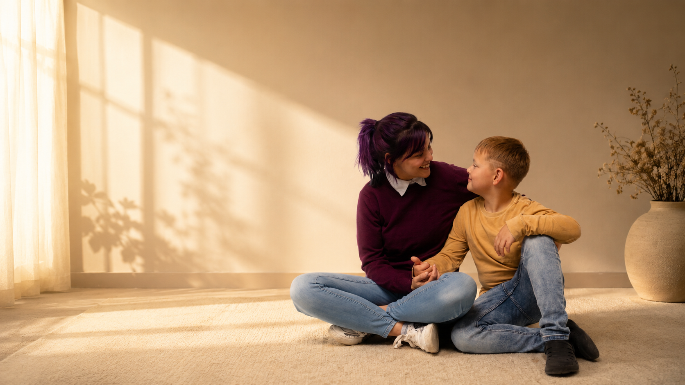
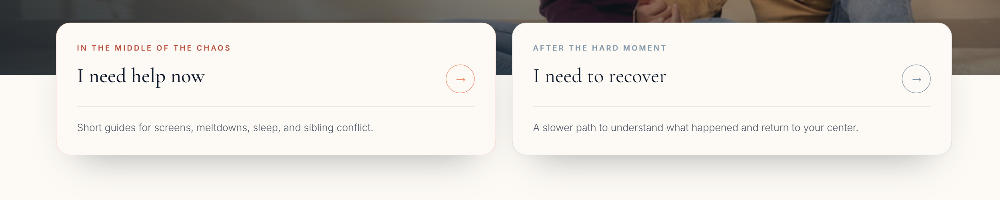
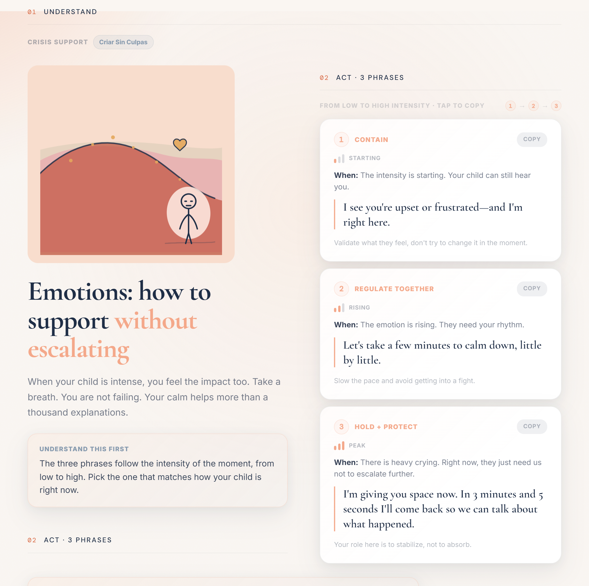
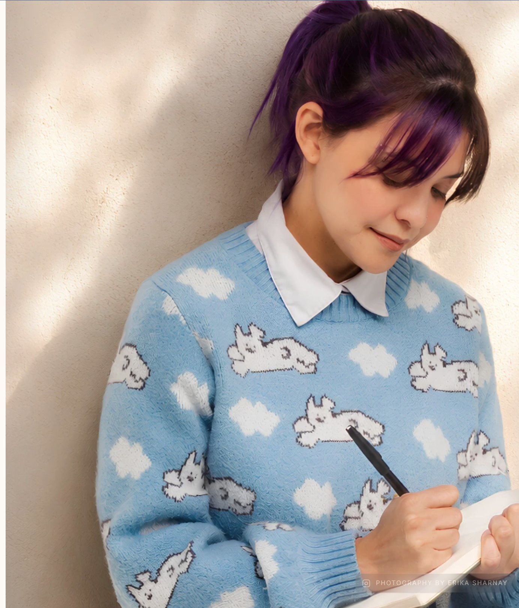
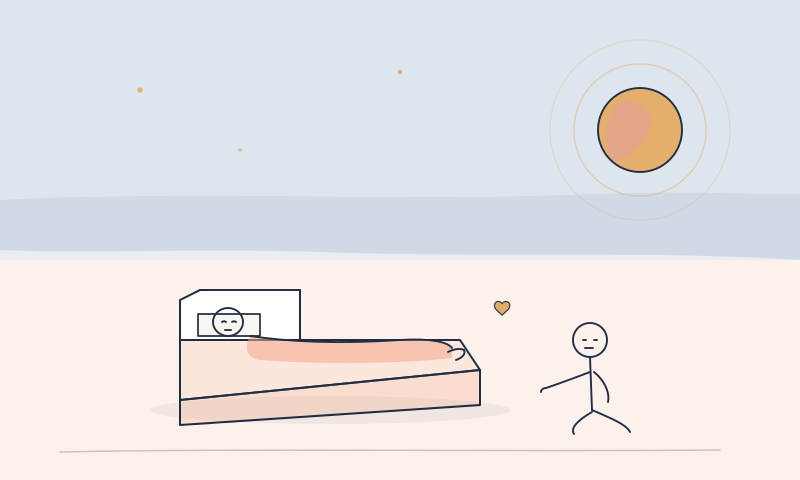
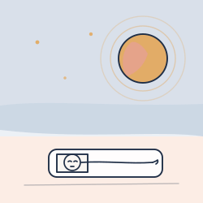
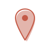

Criar sin culpas.
The human need · Editorial support system

Designed for exhausted parents,
not perfect attention spans.
Criar Sin Culpas was built for parents arriving in two different states: searching for help now, or trying to understand what happened afterward. The experience begins with that reality. The architecture starts with the parent's need, not the site's internal categories.



Editorial system · Content design · Accessibility
The system does not decorate.
It holds.
Built for the parent scanning at 11pm with a child crying nearby, every visual decision creates an anchor: where to look, what to read, and what to do next.
Scannability, here, is a form of care.
One story.
Four reading distances.
Editorial



A custom alphabet creates recognition across guides, articles, and support moments.
